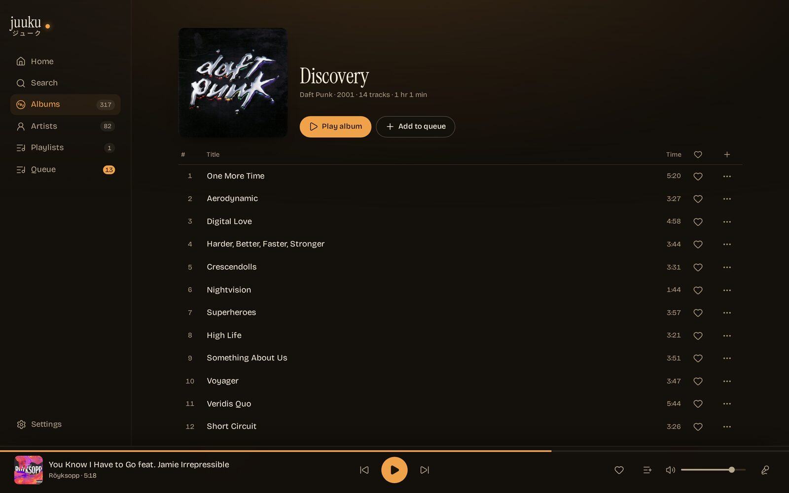

The remote for the jukebox in the room.
Want your Navidrome to play the music on the box with the speakers? Jukebox mode does that, but it needs a remote control — so we built Juuku, a full-fledged companion app for jukebox mode. Browse the library, queue a track, skip, favorite, and set the volume from any phone on your network.


What it does
-
Library
Album grid, artist list and playlists, with the covers doing the talking.
-
Search
One field across songs, albums and artists. Tap a track to queue it, ▶ to play it now.
-
Player
Artwork, scrubber, transport, volume, favorite. It shrinks to a bar so the library keeps the room.
-
Queue
Jump to a track, pull one out, shuffle, or clear the lot. The queue belongs to the room, not your phone.
-
Lyrics
Synced from the file's own tags or a
.lrc, from LRCLIB when the file has none. The line being sung lights up. -
Favorites
Hearts land in a Favorites playlist, so every other Subsonic client sees them too.
ジューク is how Japanese shortens ジュークボックス — the box, with the middle knocked out.
Three themes, one layout
Same screens, same data. Pick one — this page and every screenshot follow.

Questions, answered
The short answers to the ones that come up before installing. Everything longer lives in the setup docs.
Do I have to run another server?
A small container next to your Navidrome, on the same machine or the same network. No database, no cloud, no account.
Why not just use Navidrome's own UI?
Jukebox control lives behind the Subsonic jukeboxControl endpoint, and
Navidrome's player never calls it. Juuku does — and keeps the Navidrome password on
the server, where the browser cannot see it.
Who can queue songs?
Whoever can reach the port. Leave JUUKU_PASSWORD unset and that is your
LAN; set it and everyone needs the password once, for 30 days. Either way the port
stays private — no router forwarding.
Does it need its own Navidrome account?
No — any account works, yours included. One catch: Navidrome refuses jukebox
control from non-admins unless you set ND_JUKEBOX_ADMINONLY=false on
the server. So either hand it an admin account, or flip that setting and use a
normal one. A second account is tidier if you would rather not put your own
password in a container, but it is optional.
Why not a native app?
Building and shipping phone apps is more work: slower to iterate, two more codebases to keep alive, and the stores charge for it — Apple wants $99 a year before you ship anything. So no, not planned. If enough people chip in that developer fee though, it probably happens — and until then the web app does the job, especially installed as a PWA.
Does it work on a phone?
It was built for the phone — that is the intended use — but it works flawlessly on anything with a browser; wide screens get a sidebar instead of the tab bar. It installs to a home screen as a PWA as well, which needs HTTPS: that part of the setup docs covers it.
Why is it free?
Because we built it for ourselves. The remotes that existed were stale — the iOS ones especially — and the gap was annoying enough to fix. It came out fun, fun enough that someone else might get some use out of it. No account, no upsell, nothing to buy.
Run it
One container, next to the Navidrome that owns the speakers. Point it at the server, give it a jukebox account, open the port on your phone.
docker run -d \
--name juuku \
-p 3101:3101 \
--read-only --cap-drop ALL \
-e NAVIDROME_URL=http://navidrome:4533 \
-e NAVIDROME_USER=juuku \
-e NAVIDROME_PASSWORD=change-me \
ghcr.io/nomorenamesstudio/juuku:latestInstall Juuku, a web remote for Navidrome's jukebox mode.
Repository: https://github.com/nomorenamesstudio/juuku (MIT, Node + Docker, no build step).
1. Read docs/SETUP.md first; it is the source of truth for the rest.
2. Ask the user for the Navidrome URL instead of guessing it: it is the base URL of
the Navidrome that owns the speakers (default port 4533). `http://navidrome:4533`
is the compose example, not a real address, and only resolves if this container
joins that Docker network.
3. Run the container with those values:
docker run -d --name juuku \
-p 3101:3101 \
--read-only --cap-drop ALL \
-e NAVIDROME_URL=<navidrome-url> \
-e NAVIDROME_USER=<account> \
-e NAVIDROME_PASSWORD=<that-account-password> \
ghcr.io/nomorenamesstudio/juuku:latest
4. Jukebox control is admin-only in Navidrome by default: give Juuku an admin
account, or set ND_JUKEBOX_ADMINONLY=false and use a plain one.
5. Open http://<host>:3101 on a phone. Keep it on the LAN; for HTTPS, a path
prefix or a home-screen install, follow docs/SETUP.md.
Ask before exposing a port or changing Navidrome settings.
Then open http://<host>:3101. A compose file with the read-only
hardening, path-prefix recipes and the HTTPS/PWA notes are in
the setup docs.
Stuck on something the docs don't cover? Open an issue on GitHub or write to hey@nomorenames.studio — happy to help. It is a hobby project, not a support desk: answers come when they come, and the setup docs already cover the usual suspects.